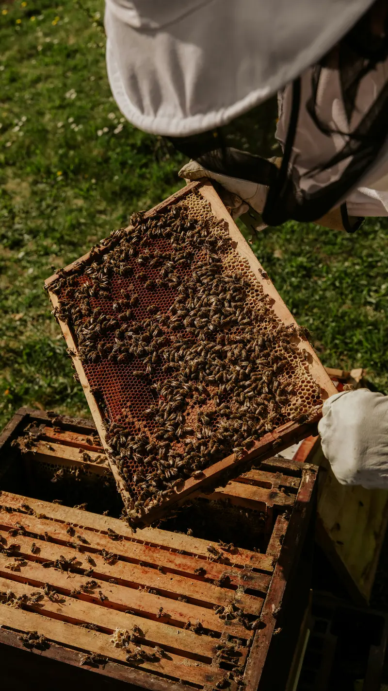

October Beekeeping UK
October Beekeeping UK – Fondant, Insulation and Winter Prep
Last updated: 15 August 2026

October is a month of transition in the UK apiary. The summer flow has finished, evenings are drawing in and your bees are settling into winter mode. By now your colonies should already have completed their main varroa treatments and be well on the way to having enough winter stores. October is about checking that everything is in place for the months ahead – food, insulation, protection from pests, awareness of diseases and a sound, weatherproof hive. It is also a key point for confirming that your varroa management approach has worked before winter fully sets in.
Frequent full inspections are no longer needed, but a few short, well-timed checks can make all the difference. You are now supporting the winter cluster rather than trying to grow the colony. Think of this month as your final chance to remove obvious problems and make your bees as comfortable as possible before the weather really turns.
If you are following the full Year in the Apiary series, October builds on the feeding and varroa work done in September, and leads into quieter, mostly hands-off winter monitoring in November.
October sits in the middle of the main autumn beekeeping period. For the wider seasonal picture, see the Autumn Beekeeping UK guide, which links September, October and November tasks together.
October is about leaving colonies settled
Keep winter checks, stores and final prep tied to the right hive
By October, the aim is no longer expansion but security. HiveTag helps you keep track of colony weight, fondant use, winter readiness and any final concerns before the hives quieten down.
October at a Glance – Winter Readiness Focus
Bee Behaviour
- Colonies are clustering more and flying less
- Foraging opportunities are limited and weather-dependent
- Bees are shifting fully into winter survival mode
Key Jobs for the Beekeeper
- Check stores and prepare fondant for light colonies
- Improve insulation, ventilation and weather protection
- Fit mouse guards and tidy equipment for winter
Risks to Watch
- Colonies going light before winter is fully established
- Condensation, damp or leaking roofs affecting the cluster
- Mice, woodpeckers and storm damage to hives or equipment
- Colonies entering winter with high varroa levels
Checking Winter Stores and Using Fondant
By October, your colonies should already have a good amount of sealed honey or syrup. A full-sized hive in the UK generally needs around 20–25 kg of stores to overwinter comfortably, though exact amounts can vary with hive type, location and bee strain.
You can assess stores by:
- Hefting the hive regularly to get a feel for its weight.
- Looking through the crownboard or gently tipping back the brood box (avoiding lengthy inspections).
- Reviewing your notes from earlier inspections – see Hive Management for record-keeping tips. This is also a good moment to sense-check your season against the Varroa Treatment Calendar (UK). By October, treatment should be complete and colonies should be entering winter with reduced mite pressure.
October is usually the point where liquid feeding is either completed or winding down. As nights become colder, bees struggle to evaporate the water from syrup. At this stage many beekeepers switch their attention to fondant:
- Keep at least one block of fondant ready for each hive.
- Place fondant above the cluster – directly over the brood frames on top of the crownboard, or under an upturned feeder.
- Cut a slit in the plastic to limit drying out and allow bees easy access.
- Check periodically through the cooler months, replacing fondant if it has been eaten or dried out.
Fondant is ideal as an emergency feed during cold conditions because bees can eat it without needing to process large amounts of water. It can be the difference between a colony surviving or starving after a long cold snap.
Stores still matter in October
Keep hefting notes, fondant checks and winter weight records organised
Once colonies close down, the useful details are the ones you already wrote down. HiveTag helps you record which hives feel light, which already have fondant and which need watching most closely.
Insulation and Condensation Control
A well-prepared winter hive aims for warm bees in a cool, dry box. Insulation and ventilation need to work together – not against each other.
For poly hives:
- Poly walls and roofs already provide excellent insulation.
- Additional insulation is often unnecessary, but you should still keep roofs watertight and check for gaps or damage.
For wooden hives:
- Add insulation above the crownboard, such as a quilt box or rigid foam board in an empty super.
- Ensure vents or feed holes are either closed or used appropriately, so moist air has a controlled path out of the hive.
- Make sure the hive is not exposed to constant draughts, especially from underneath.
Condensation is a major winter risk. Cold air outside meets warm, moist air from the cluster; if this moisture condenses on the underside of a cold roof, it can drip back onto the bees. To minimise this:
- Insulate the roof so the top of the hive remains relatively warm compared to the sides.
- Maintain a small, clear entrance so moist air can escape.
- Avoid blocking all ventilation – trapped moisture is more harmful than a little chill.
More guidance on managing hive conditions, disease risk and cleanliness can be found in the Hive Hygiene guide, which plays a key role in reducing overwinter losses linked to damp and infection.
Protecting Hives from Mice, Woodpeckers and Other Pests
As temperatures drop, other creatures view your hives as a warm, food-rich shelter. Two common UK problems are mice and woodpeckers, but it is also important to remain aware of wider bee pests and late-season pressure on weaker colonies.
Mice:
- Fit mouse guards across the entrance if you did not do so in September.
- Check that guards are secure and that bees can still pass through easily.
- Keep grass and vegetation short around stands to make it less attractive for rodents.
Woodpeckers:
- If woodpeckers are present in your area, consider wrapping hives with wire mesh or netting to prevent birds from pecking the boxes.
- Cluster hives closer together if practical – isolated hives are more likely to be targeted.
- Some beekeepers also provide alternative feeding points away from the apiary to distract birds.
By this stage, wasps are usually starting to decline, but weaker colonies may still be vulnerable. Keep entrances reduced and the apiary tidy to discourage late robbing or scavenging. If colonies appear to struggle, revisit common bee diseases and pest pressure to rule out underlying issues before winter.
Hive Stands, Strapping and Weatherproofing
Autumn and winter storms can cause as much damage as disease or starvation. October is the month to give your hive stands and roofs a thorough check:
- Make sure stands are stable, level and secure, with no rotten legs or loose blocks.
- Consider raising hives a little higher if you are in a very damp or flood-prone area.
- Strap hives down or use heavy weights on roofs to prevent them from blowing off in high winds.
- Check roofs for leaks or damaged corners and repair or replace as needed.
- Tilt hives slightly forwards so any condensation or rainwater runs out of the entrance rather than pooling inside.
Small jobs done now will save you from having to make emergency repairs in the cold, wet and dark later in the season.
Cleaning and Storing Beekeeping Equipment
As the beekeeping season draws to a close, October is an excellent time to clean and organise your equipment so it is ready for spring. Good hygiene helps to reduce disease risk and makes it easier to get started next year.
Tasks might include:
- Scraping and cleaning spare brood boxes, supers, roofs and floors.
- Cleaning feeders and storing them where they will remain dry and safe.
- Sorting frames – keeping good drawn comb for next year and responsibly disposing of old or damaged comb.
- Flaming or washing tools, queen excluders and other small items following hygiene best practices.
Clean, well-maintained equipment is another important part of managing diseases and pests, along with regular health checks and good record-keeping. Poor hygiene going into winter is a common cause of avoidable colony loss.
Gardening for Bees and Beekeeping Planning
October is a great time to think about next year's forage. You can:
- Plant spring bulbs – such as crocus, snowdrops and early-flowering species – so your bees have nearby nectar and pollen when colonies begin to build up.
- Review your garden or apiary planting plan with ideas from the Bee Gardening guide.
This is also when many suppliers hold beekeeping sales. It can be a sensible time to buy:
- Spare brood boxes and supers.
- Frames, foundation and feeders.
- Protective clothing or tools that need replacing.
A little planning now means you will be ready to go when the new season starts, rather than scrambling for equipment at the last minute.
Reduced Inspections and What to Watch from Outside
In October, frequent full hive inspections are usually no longer necessary. Opening hives too often can chill the cluster and disturb the bees when they are trying to conserve heat.
Instead, focus on:
- Hefting hives occasionally to check weight.
- Watching entrance activity on milder days – a small amount of flight is normal, especially on sunny afternoons.
- Looking for signs of distress such as dead bees in large numbers, constant aggression at the entrance or possible robbing.
- Checking that mouse guards, straps and roofs remain in place after windy or wet weather.
Only open hives briefly when you genuinely need to – for example, to add fondant or double-check a concern that cannot be assessed from outside.
October Winter-Readiness Checklist
Use this checklist to review each colony before winter truly sets in:
- ✔ Varroa treatment completed, reviewed against the Varroa Treatment Calendar (UK) and mite levels monitored.
- ✔ Hive feels adequately heavy when hefted – or fondant prepared for light colonies.
- ✔ Mouse guard fitted securely and entrance reduced to a defendable size.
- ✔ Roof watertight, hive strapped or weighted against strong winds.
- ✔ Insulation in place above the crownboard (especially for wooden hives).
- ✔ Hive slightly tilted forwards so moisture runs out rather than pooling.
- ✔ Stands stable, level and clear of long grass or debris.
- ✔ Spare equipment cleaned following hygiene best practices, stored and ready for next season.
- ✔ Records updated with final autumn notes – see Hive Management for record ideas.
Your winter checklist is only useful if you can find it later
Record stores, fondant, straps and winter-readiness by hive
October is the point where small details matter most. HiveTag helps you keep final autumn notes clear so you know exactly which colonies were light, secured or already fully winter-ready.
Common Beginner Mistakes in October
- Relying solely on visual inspection and not hefting hives to judge stores.
- Continuing syrup feeding too late, leaving unripe stores that can ferment.
- Delaying or forgetting to fit mouse guards until damage is already done.
- Failing to address leaky roofs or unstable stands before winter storms.
- Wrapping hives too tightly and blocking all ventilation, causing condensation problems.
- Ignoring equipment cleaning and hygiene, increasing the risk of disease carry-over into spring.
- Assuming varroa is "done" without checking results against the treatment calendar or monitoring mite levels.
If you are unsure about any aspect of winter preparation, talk to your local association or mentor, or revisit pages such as Hive Management, Hive Hygiene and Bee Gardening.
October Beekeeping FAQ – UK Beekeepers
Your main tasks are checking winter stores, preparing fondant for light colonies, insulating hives and controlling condensation, protecting against mice and woodpeckers, strapping hives down, cleaning equipment and making final checks before the quiet winter period.
In early October you may still feed strong syrup if conditions are mild and bees can ripen it. As nights become colder, it is generally safer to stop syrup and rely on fondant as an emergency or top-up feed when needed.
Place the fondant block above the cluster, ideally directly above the brood nest. Cut a slit or remove a small section of plastic, position it over the feed hole or on top of the frames and cover with an empty super or eke before replacing the roof.
No. By October, full inspections are usually unnecessary unless you have a specific concern. Focus on external checks, hive weight and quick internal visits only when needed to add fondant or resolve an issue.
Signs include damp, mouldy frames or water droplets on the underside of the roof. Good roof insulation, a small entrance and a slight forward tilt help prevent this. Address the cause rather than just wiping moisture away.
Very important. Cleaning spare boxes, frames, feeders and tools in autumn helps reduce disease risk and ensures you are ready to respond quickly in spring when colonies expand and need more space.
Yes. With fewer hive manipulations to do, you can review your records, decide which colonies you might breed from, plan equipment purchases and think about planting more forage as outlined in Bee Gardening.
From guide to practical winter setup
Use HiveTag alongside your October hive checks
Keep this page for reference, then record weight checks, fondant use, insulation notes and final winter prep as you go. That makes later winter monitoring far less guesswork.
What to Read Next from This October Guide
If you are moving into winter monitoring, checking disease risk or tidying equipment, the next pages to read are September Beekeeping Tasks, November Beekeeping Tasks, Varroa Treatment Calendar (UK), Varroa Management, Bee Diseases, Bee Pests, Hive Management and Hive Hygiene.
Use this October guide together with the rest of the Year in the Apiary series to carry dry, secure and well-prepared colonies into the quietest part of the beekeeping year. From here, continue into November, revisit September if you are reviewing feeding or autumn treatment timing, and use key support pages such as varroa management, hive hygiene, hive management, bee gardening and bee pests to connect October winter preparation with the season ahead.